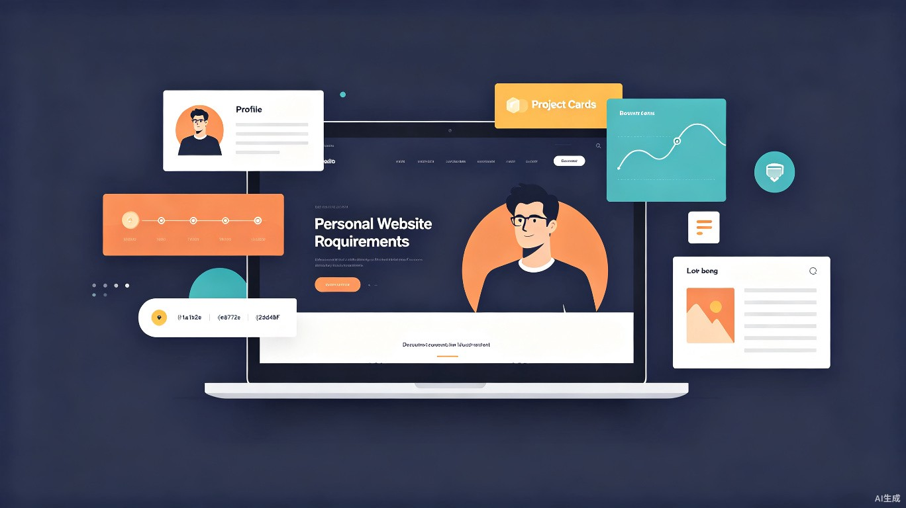
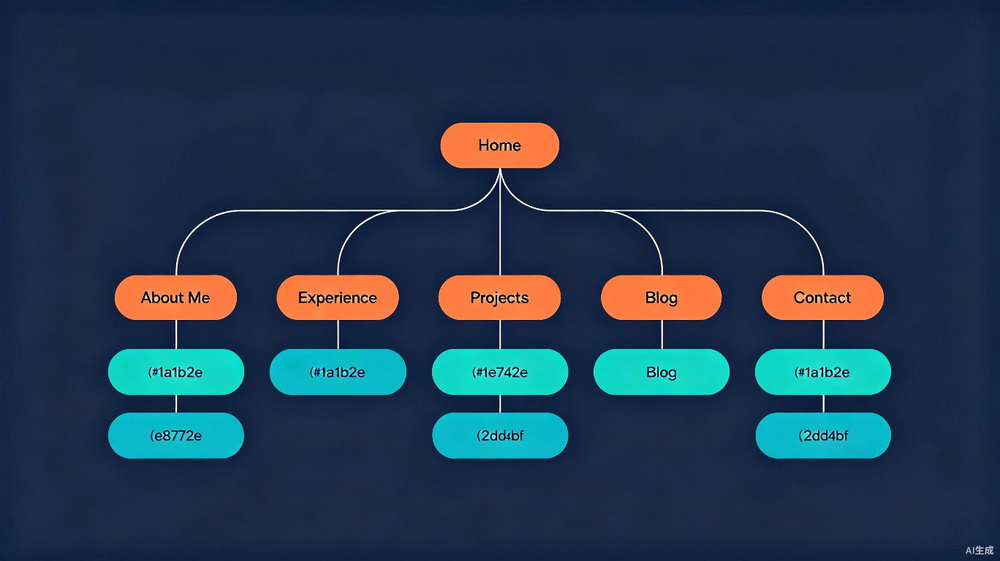
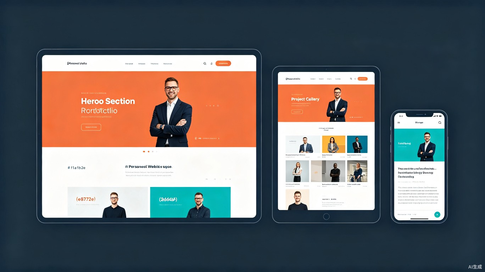

基于涂奎简历的针对性个人品牌站点规划。面向项目管理/PMO领域，整合职业成长路径、千万级项目案例研究、PMO体系建设方法论与跨行业经验分享五大核心模块，兼顾政企招聘、商业合作与行业影响力建设。

涂奎的简历展示了一条清晰的职业路径：从测试技术主管起步，历经字节跳动的AI数据项目管理、三维天地的数据治理、瀚华金融的PMO体系建设，到如今中国电信的产品项目经理。7年间横跨互联网、金融、政务、公卫医疗、制造业五大行业，管理过超5000w资金规模的项目组合。但简历格式存在天然局限——它只能回答"做过什么"，无法回答"怎么想的"和"为什么能做成"。
对于项目管理/PMO岗位，招聘方和合作方最关心的不是项目列表，而是三个问题：你在复杂约束下如何决策？你的方法论是否可迁移？你的管理规模和管理复杂度是否匹配我们的需求？一份两页简历无法承载这种深度叙事。个人网站的价值在于把散落在各项目中的量化成果统一呈现、把隐含在经验中的方法论显性化、把职业成长路径可视化。
面向政企客户、金融机构、大型企业的项目管理/PMO专家个人品牌站点。核心定位是"用项目管理的系统思维经营个人品牌"——不仅展示"管理过什么项目"，更要展示"如何搭建管理体系"、"如何在跨行业场景中迁移方法论"、"如何在千万级项目中控制风险"。
本网站不追求炫技体验，不做成在线简历翻版，也不做纯技术博客。核心价值在于管理深度的叙事、方法论的可视化、项目成果的统一呈现。
| 场景 | 访客类型 | 触发条件 | 期望结果 |
|---|---|---|---|
| 快速评估管理匹配度 | A | 收到简历链接或搜索"PMO 重庆"等关键词 | 30 秒内看到管理规模、资金量级、行业覆盖 |
| 评估同类项目经验 | B | 搜索"AI+政务项目管理"或"数据治理项目" | 找到匹配行业的深度案例，看到决策过程和成果 |
| 获取PMO方法论 | C | 搜索"PMO体系建设""敏捷转型"等关键词 | 找到可落地的制度规范、工具链建设经验 |
| 发起商务联系 | A/B | 对作者的专业背景产生兴趣 | 1 步操作找到联系方式并发送合作咨询 |
| 发布新项目案例 | 管理员 | 项目通过初验或获得重要成果 | 在 CMS 中完成案例编写、预览、发布 |
| 案例 | 产品定位 | 核心亮点 | 可借鉴之处 |
|---|---|---|---|
| Brittany Chiang | 极简开发者 Portfolio | 暗色主题 + 清晰信息层次；"Things I've Built" 用技术标签 + GitHub 链接；GitHub 7k+ stars 的开源模板 | 信息架构简洁有力；项目展示的技术标签和外部链接策略 |
| Josh W. Comeau | 趣味交互教育型站点 | 复古风格 + 大量微交互和声音效果；博客与付费课程无缝集成；网站本身就是前端能力证明 | 个性表达方式；教育内容与个人品牌的融合 |
| Sarah Dayan | 多维身份展示 | Posts / Projects / Talks / Interviews 四大模块；同时运营技术博客 frontstuff.io；设计干净专业 | 多维度专业身份的模块化展示方式 |
| Bruno Simon | 3D 互动游戏式 Portfolio | 整个网站是一个 3D 驾驶游戏；用户开车探索项目；Three.js + WebGPU | 沉浸式体验的极端范例；差异化定位的思路 |
上述案例覆盖了"极简信息展示"和"极致交互体验"两个极端。本网站选择中间路线——内容深度优先，交互适度。具体来说：
| 层次 | 推荐方案 | 理由 |
|---|---|---|
| 前端框架 | Next.js 14+ (App Router) | SSG/SSR 灵活切换，内置图片优化、SEO、API Routes，生态成熟 |
| UI 组件 | Tailwind CSS + shadcn/ui | 高度可定制、组件质量高、暗色模式支持好 |
| 内容管理 | Sanity 或 Payload CMS | Sanity: 灵活 schema + 实时预览；Payload: 代码优先 + TypeScript 原生 |
| 数据库 | PostgreSQL (Supabase) | 留言/联系表单等动态数据存储，Supabase 提供免费 tier |
| 部署 | Vercel | 与 Next.js 深度集成，CI/CD 开箱即用，免费 tier 足够个人站点 |
| 分析 | Umami (自托管) | 隐私友好、不依赖 Cookie、支持 GDPR |

flowchart TD
Home[首页 /] --> About[关于我 /about]
Home --> Experience[工作经历 /experience]
Home --> Projects[项目作品 /projects]
Home --> Methodology[管理方法论 /methodology]
Home --> Blog[知识分享 /blog]
Home --> Contact[联系方式 /contact]
About --> Philosophy[管理理念]
About --> Skills[能力金字塔]
About --> Cert[资质认证]
About --> Uses[工具清单]
Experience --> Timeline[成长路径时间线]
Experience --> Detail[经历详情]
Projects --> Gallery[项目画廊]
Projects --> CaseStudy[案例研究详情]
CaseStudy --> Challenge[问题背景]
CaseStudy --> Solution[解决方案]
CaseStudy --> Outcome[成果与思考]
Methodology --> Framework[PMO体系框架]
Methodology --> Process[制度规范清单]
Methodology --> Tools[工具链建设]
Blog --> Articles[文章列表]
Blog --> Category[分类标签]
Blog --> ArticleDetail[文章详情]
ArticleDetail --> TOC[目录导航]
Contact --> Form[联系表单]
Contact --> Social[社交链接]
管理方法论作为独立一级导航，与项目作品集并列——这是简历中PMO体系建设经验的显性化载体，也是区别于普通项目管理者的核心差异化内容| 编号 | 功能模块 | 功能描述 | 优先级 |
|---|---|---|---|
| F01 | 首页 | Hero 区域展示个人定位声明 + 核心模块入口导航 + 最新动态摘要，作为用户的第一印象和全站导航枢纽 | P0 |
| F02 | 关于我 | 个人简介、产品理念阐述、技能图谱可视化（通过项目上下文展示而非进度条）、工具清单（Uses 页面），建立立体化的个人形象 | P0 |
| F03 | 工作经历 | 可交互时间线展示职业路径，每段经历可展开查看详情（职责范围、核心成果、关键数据），支持按公司/角色筛选 | P0 |
| F04 | 项目作品集 | 项目画廊支持按类别/技术栈筛选，项目详情页采用案例研究叙事（问题→决策→成果→思考），展示思维方式而非仅有产出 | P0 |
| F05 | 知识分享/博客 | Markdown/MDX 驱动的文章系统，支持分类标签、全文搜索、代码高亮、目录导航、RSS 订阅、阅读时间估算 | P0 |
| F06 | 联系方式 | 联系表单（集成邮件发送）、社交媒体链接聚合、公钥/PGP 指纹（可选），让访客可以用最舒适的方式发起联系 | P1 |
| F07 | CMS 管理后台 | 基于 Headless CMS（Sanity/Payload）的内容管理，支持文章和项目内容的可视化编辑、实时预览、草稿保存、定时发布 | P0 |
| F08 | 暗色模式 | 全局双主题切换，跟随系统偏好或手动切换，使用 CSS 变量实现无缝过渡 | P1 |
| F09 | SEO 优化 | 自动生成 meta 标签、Open Graph、structured data、sitemap.xml、robots.txt，每页独立配置 SEO 信息 | P0 |
| F10 | 国际化 (i18n) | 中英双语支持，可切换语言，URL 路由区分（/zh/、/en/），CMS 内容按语言版本管理 | P2 |
| F11 | 数据分析 | 基于 Umami 的隐私友好访问统计，追踪页面浏览量、来源渠道、热门内容、访客地理分布 | P2 |
| F12 | 响应式设计 | 适配桌面、平板、手机三种设备形态，移动端优化触控交互和阅读体验 | P0 |
| F13 | 资质认证展示 | PMP、NPDP等专业认证的独立展示页，含证书编号（脱敏）、获取时间、认证范围说明。配合认证徽章视觉设计，增强专业可信度 | P1 |
| F14 | 管理方法论 | PMO体系建设成果的显性化展示：制度规范清单、工具链架构图、敏捷转型路径、知识库模板。将简历中"制度建设""工具链建设"工作描述转化为可阅读的方法论资产 | P0 |
| F15 | 项目影响力看板 | 首页嵌入的动态数据看板：累计管理资金、交付项目数、管理过的最大团队规模、跨行业数量、认证数量。数据随CMS内容更新自动计算 | P0 |
首页是全站的入口和导航枢纽。对于涂奎的背景，访客到达首页后，需要在 10 秒内获得三个信息：这个人的管理规模是什么量级、管理过哪些行业的项目、如何联系。简历中亮眼的量化数据（超5000w管理资金、33个项目交付、800+人团队管理）散落在各项目中，首页通过影响力看板将这些数据统一呈现，形成强有力的第一印象。
graph TB
subgraph "首页结构"
direction TB
A["固定导航栏：Logo + 模块链接 + 暗色模式切换"]
B["Hero 区域：个人定位声明 + 简短介绍 + CTA 按钮"]
C["影响力看板：累计资金 / 交付项目数 / 最大团队 / 跨行业数 / 认证数"]
D["最新动态：最近 1 个项目里程碑 + 最近 2 篇博客"]
E["核心能力标签：PMO体系建设 / 千万级项目管理 / 跨行业方法论迁移"]
F["联系方式快速入口：邮箱 + 社交链接"]
G["页脚：版权 + RSS + 统计"]
end
A --> B --> C --> D --> E --> F --> G
看板位于 Hero 区域下方，使用 5 个数据卡片横向排列，数据从 CMS 中所有项目的元数据自动聚合计算：
| 指标 | 当前值（基于简历） | 数据来源 |
|---|---|---|
| 累计管理资金 | 5000w+ | 各项目预算字段求和（疾控中心2000w+市民宗委1900w+综合融资+阳光安居580w+光明480w） |
| 交付项目数 | 33+ | 字节跳动期间33个 + 其他公司项目 |
| 管理过最大团队 | 800+ 人 | 字节跳动数据标注项目峰值执行成员 |
| 跨行业经验 | 5 个行业 | 互联网 / 金融 / 政务 / 公卫医疗 / 制造业 |
| 专业认证 | 2 项 | PMP + NPDP |
主标题：产品项目经理 / 从0到1搭建PMO体系
副标题：7年项目管理经验，PMP & NPDP 双认证。横跨互联网、金融、政务、医疗、制造五大行业，管理过超5000w资金规模的项目组合，擅长在复杂约束下保障千万级项目交付。
CTA：[查看项目案例] [管理方法论] [了解更多]
关于我页面要回答"你是谁"这个问题。对于涂奎的背景，需要从四个维度构建立体形象：你是怎么思考的（管理理念）、你擅长什么（能力金字塔）、你凭什么可信（资质认证）、你用什么工具（Uses 页面）。简历中PMP+NPDP双认证仅出现在教育经历中，被严重埋没——资质认证需要作为独立视觉区域突出展示。
| 分区 | 内容 | 交互 |
|---|---|---|
| 个人简介 | 200–300 字个人定位。强调"从测试技术主管到PMO再到产品项目经理"的成长路径，以及跨行业方法论迁移的核心价值。配合职业照。 | 静态展示 |
| 管理理念 | 3–5 条项目管理原则，每条配真实案例佐证。例如："项目管理的本质不是赶进度，而是在约束三角中做最优决策。" | 点击原则可展开查看详细案例 |
| 能力金字塔 | 按三层结构组织：战略层（PMO体系建设、项目组合管理）、战术层（敏捷转型、供应商管理、售前支撑）、执行层（需求转化、数据分析、SQL/Excel）。每层配实际项目佐证。 | 点击每层展开详细能力和对应项目 |
| 资质认证 | PMP（项目管理专业人士）和 NPDP（产品经理国际资格认证）的独立展示。含认证徽章、获取时间、认证编号（脱敏）、认证价值说明。辩论赛优秀辩手作为软技能标签展示。 | 点击徽章查看认证详情和继续教育记录 |
| 工具清单 | 日常使用的项目管理工具（JIRA、飞书）、数据分析工具（Excel高级函数、SQL）、协作工具等。按"项目管理 / 数据分析 / 协作沟通"分类。 | 按类别分组展示 |
简历中的技能点（团队管理、项目集合管理、PMO体系建设、AI中台、数据中台、方案编制、需求转化、招投标、敏捷团队、数据分析）需要按层次组织，而非平铺：
战略层（顶层，管理决策视角）：
项目组合管理PMO体系建设制度规范设计
佐证：瀚华PMO从0到1建设4项规范 + 疾控中心7个项目组合管理超2000w
战术层（中层，项目执行视角）：
敏捷转型供应商管理售前支撑风险管控
佐证：总集管理三家供应商（市民宗委）+ 主导招投标技术方案（电信）
执行层（底层，落地交付视角）：
需求转化数据分析SQLExcel高级函数
佐证：数据驱动的管理工具链设计 + 280+人绩效体系构建
PMP和NPDP双认证在项目管理领域是硬通货，但在简历中仅作为教育经历的附属信息出现。网站上需要：
工作经历的核心目标不是罗列职位，而是展示一条清晰的职业跃迁路径：测试技术主管（0–1建团队，23人）→ 项目负责人（AI数据标注，800+人峰值）→ 项目经理（数据治理，480w）→ PMO（体系建设，20人团队管理）→ 产品项目经理（千万级项目组合，售前+交付全周期）。简历中这段路径隐含在5个工作经历中，网站需要通过成长路径可视化让它一目了然。
graph LR
subgraph "职业成长路径"
direction LR
A["技术主管
湛腾世纪
2018-2020
团队23人"]
B["项目负责人
字节跳动
2020-2021
峰值800+人"]
C["项目经理
三维天地
2021-2022
项目480w"]
D["PMO
瀚华融资
2022-2024
团队20人"]
E["产品项目经理
中国电信
2024-至今
组合2000w+"]
end
A --> B --> C --> D --> E
| 字段 | 类型 | 说明 |
|---|---|---|
| 公司名称 | 文本 | 必填 |
| 角色 | 文本 | 必填，如"PMO" |
| 时间段 | 日期范围 | 开始日期 - 结束日期（在职则显示"至今"） |
| 行业标签 | 标签 | 互联网 / 金融 / 政务 / 公卫医疗 / 制造业 |
| 管理规模 | 文本 | 团队人数 + 资金规模，如"20人团队 / 千万级项目组合" |
| 职责描述 | 富文本 | 1–3 句话概括核心职责 |
| 核心成果 | 列表 | 2–4 条，每条包含描述和关键数据指标 |
| 关键转折 | 文本 | 该阶段的关键决策或转折点，解释"为什么离开/为什么加入" |
| 工具 / 方法论 | 标签 | 该段经历使用的主要工具和方法论 |
简历中5段工作经历是并列呈现的，缺少"为什么跳槽""每次跳槽带来了什么成长"的叙事。网站上每段经历应增加关键转折字段：
这是全站最有价值的内容模块。简历中有6个项目，但存在两个问题：一是6个项目平铺呈现，缺少精选和层级；二是每个项目只有"做了什么+结果"，没有展示决策过程。网站需要精选4个最具代表性的项目做深度案例研究，其余2个项目做简要展示。同时，项目分类要从泛泛的"产品设计/技术项目"改为贴合实际的行业场景分类。
| 项目 | 资金规模 | 展示策略 | 理由 |
|---|---|---|---|
| 疾控中心项目组合 | 2000w+ | 深度案例研究 | 最大资金规模+国家一等奖，展示项目组合管理和AI+政务能力 |
| 市民宗委总集项目 | 1900w | 深度案例研究 | 总集管理+多头政务管理的复杂性，展示总集管理和政务关系处理能力 |
| 阳光安居交易平台 | 580w | 深度案例研究 | 创新类产研项目+PK掉友商，展示创新项目管理和商业竞争能力 |
| 综合融资业务系统 | — | 深度案例研究 | 自研核心系统+提前交付+集团主推，展示自研项目管理能力 |
| 上海光明数据治理 | 480w | 简要卡片 | 传统数据治理项目，作为行业覆盖的补充 |
| 数据标注类项目 | — | 简要卡片 | 展示规模化项目管理能力（33个项目、800+人），作为管理广度的补充 |
graph TB
subgraph "项目画廊页"
direction TB
A["页面标题 + 项目影响力看板摘要"]
B["筛选栏：全部 / AI+政务 / PMO体系建设 / 数据治理 / 金融创新 / 规模化交付"]
C["重点项目卡片：大尺寸，案例研究入口"]
D["补充项目卡片：小尺寸，快速概览"]
end
A --> B --> C --> D
| 区域 | 内容 | 说明 |
|---|---|---|
| 项目头部 | 项目名称、角色、时间段、资金规模、团队规模、状态（已完成/进行中） | 最顶部，一目了然。资金规模和团队规模是项目管理者的核心指标 |
| 问题背景 | 项目起源：客户遇到了什么问题？政策驱动还是业务驱动？目标用户是谁？ | 建立上下文。例如市民宗委项目的"多头管理"复杂性 |
| 约束条件 | 时间限制、预算限制、多头管理约束、合规要求、供应商协调难度 | 展示在真实约束下做决策的能力。例如疾控中心项目的"7个项目并行+监理审计" |
| 关键决策 | 项目管理中的关键决策点：为什么选择总集管理模式？如何协调三家供应商？如何设计风险预警机制？ | 核心叙事区域。这是简历中完全缺失的"为什么这样做"的部分 |
| 成果与数据 | 可量化的成果指标：如期初验、提前交付、获得表扬信、国家一等奖、延展出的招标意向 | 用数据支撑。例如"延展出6项招标意向（超2000w），2个合同签订（888w）" |
| 复盘思考 | 如果重来会怎么做？总集管理中最难的部分是什么？如何在多头管理中保持客户满意度？ | 展示反思能力。对于PMO背景，复盘思考是极具说服力的差异化内容 |
项目画廊支持按类别筛选。分类设计基于简历中的实际项目类型：
AI+政务 PMO体系建设 数据治理 金融创新 规模化交付 总集管理
分类在 CMS 中可自定义。一个项目可同时属于多个分类（如疾控中心项目同时属于"AI+政务"和"总集管理"）。筛选器切换时使用 CSS transition 动画过渡。
简历中每个项目的结构是"背景→工作内容→成绩"，这是标准简历格式，但存在三个问题：
博客的定位需要基于涂奎的实际经验来调整。简历中有大量可转化为博客内容的素材：PMO从0到1的制度建设、跨行业项目管理的经验对比、千万级项目组合的风险管控、数据驱动的管理工具链设计。这些内容对于搜索"PMO体系建设""千万级项目管理""政务项目管理"的访客具有高度价值，是网站获取自然流量的核心引擎。
博客分类不采用泛泛的"技术/产品/生活"，而是围绕实际专业领域：
PMO体系建设 项目组合管理 跨行业方法论 数据驱动管理 供应商管理 售前与招投标
| 区域 | 功能 | 说明 |
|---|---|---|
| 文章头部 | 标题 + 发布日期 + 阅读时间 + 分类标签 | 顶部固定 |
| 目录导航 | 自动生成的文章大纲 | 桌面端右侧固定，移动端可折叠 |
| 正文区域 | Markdown 渲染 + 表格 + 图片展示 | 项目管理类文章较少代码，但需要大量表格和流程图 |
| 底部操作 | 分享按钮 + 上一篇/下一篇导航 + "相关文章"推荐 | 鼓励连续阅读 |
以下选题可直接从简历素材中提炼，每篇都是基于真实经验的深度文章：
文章通过 Headless CMS 管理，编辑流程：
自动生成 RSS feed（支持 RSS 2.0 和 Atom 格式），页面底部提供 RSS 订阅链接。项目管理类内容适合在 LinkedIn 和专业社区传播，后续可考虑集成邮件订阅。
联系方式页面的设计原则是降低联系门槛。对于涂奎的目标访客（政企招聘方、潜在合作方），联系方式需要同时支持商务合作咨询和招聘沟通两种场景。简历中已有邮箱和电话，网站上应让这些信息一目了然，同时提供表单作为替代入口。
1634099882@qq.com（mailto 链接）这是本网站区别于普通项目管理者的核心差异化模块。简历中瀚华PMO经历有大量可显性化的方法论资产：《项目管理规范》《研发流程规范》《绩效评价体系》《知识库与模板库规范》四项制度、JIRA+飞书整合的数据驱动工具链、敏捷转型落地经验。这些内容在简历中只是一段工作描述，网站上需要将它们转化为可独立阅读、可引用的知识资产。
graph TB
subgraph "管理方法论页"
direction TB
A["页面标题：PMO体系建设与项目管理方法论"]
B["体系概览：制度规范 + 工具链 + 敏捷转型三大板块"]
C["制度规范清单：4项规范的设计思路与落地要点"]
D["工具链架构图：JIRA + 飞书的数据驱动管理闭环"]
E["敏捷转型路径：从传统瀑布到敏捷的演进过程"]
F["知识库与模板库：可下载的SOP和模板资源"]
end
A --> B --> C --> D --> E --> F
| 分区 | 内容 | 来源（简历） |
|---|---|---|
| 制度规范清单 | 逐项展示4项规范的设计背景、核心条款、落地难点和最终效果。每项规范配一个"设计思路"段落，解释为什么要这样设计。 | 瀚华PMO"制度建设"工作 |
| 工具链架构图 | 用架构图展示JIRA（研发流程管控、工时采集）与飞书（协作、报表、审批）的数据流转关系。标注"半自动化"的具体实现方式。 | 瀚华PMO"工具链建设"工作 |
| 敏捷转型路径 | 展示团队从传统瀑布模式转向敏捷的演进过程：起点状态→遇到的阻力→试点方案→全面推广→最终效果。 | 瀚华PMO"团队管理敏捷化" |
| 知识库与模板库 | 展示SOP流程、项目启动模板、风险评估模板、周报模板等。部分模板可提供下载（PDF格式），作为内容钩子吸引访客留下联系信息。 | 瀚华PMO"知识库与模板库规范" |
普通项目管理者展示"我管过什么项目"，优秀的PMO展示"我搭建过什么体系"。简历中PMO体系建设是涂奎区别于其他候选人的核心差异化能力，但在简历中仅以一段工作描述呈现。网站上将其显性化为独立模块，让访客可以直接阅读方法论细节，建立"体系建设者"而非"执行者"的专业形象。
全局双主题支持。实现方式：通过 CSS 变量 + data-theme 属性切换。首次访问时检测系统偏好（prefers-color-scheme），用户手动切换后使用 localStorage 持久化偏好。切换时使用 CSS transition 实现颜色平滑过渡，避免闪烁。
基于涂奎的背景，SEO关键词策略需要围绕项目管理领域的高价值搜索词：
| SEO 项目 | 实现方式 | 说明 |
|---|---|---|
| Meta 标签 | Next.js Metadata API | 每页独立配置 title、description、keywords。重点关键词：PMO体系建设、千万级项目管理、政务项目管理、重庆项目经理 |
| Open Graph | 自动生成 + 手动覆盖 | 社交分享时展示正确的标题、描述和图片 |
| Structured Data | JSON-LD | Person（含PMP/NPDP认证信息）、Article、WebSite 三种 schema |
| Sitemap | next-sitemap | 自动生成，提交至 Google Search Console 和百度站长平台 |
| RSS | 动态生成 | 支持 RSS 2.0 和 Atom |
| 图片优化 | Next.js Image | 自动 WebP/AVIF、lazy loading、blur placeholder |
初期仅中文即可。未来如需面向外企或海外合作方，可增加英文版本。通过 URL 路由区分语言版本（/zh/about、/en/about），CMS 内容按语言版本分别管理。
采用 Umami（自托管开源方案），避免使用 Google Analytics 等需要 Cookie 同意的方案。追踪的核心指标：

| 断点 | 设备 | 布局调整 |
|---|---|---|
| > 1024px | 桌面 | 多列布局，侧边目录，完整导航 |
| 768–1024px | 平板 | 两列布局收窄，目录移至顶部，触控优化 |
| < 768px | 手机 | 单列布局，汉堡菜单，折叠目录，增大触控区域 |
基于对简历的详细分析，以下是6个核心不足之处及对应的网站改进策略：
| 不足 | 具体表现 | 对求职的影响 | 网站改进策略 |
|---|---|---|---|
| 1. 量化成果分散，缺少统一视角 | 超5000w管理资金、33个项目、800+人团队等数据散落在6个项目中 | 招聘方无法快速判断管理量级，需要逐行阅读才能拼凑全貌 | 首页增加影响力看板，5个核心指标统一呈现，3秒建立认知 |
| 2. 项目叙事缺少决策过程 | 每个项目的结构是"背景→工作内容→成绩"，没有"为什么这样做" | 招聘方看到的只是执行能力，看不到在复杂约束下的决策能力 | 项目详情页采用案例研究式叙事，增加"关键决策"和"复盘思考"区域 |
| 3. 技能体系缺少层次化 | 个人优势中平铺了10+个能力点，没有战略/战术/执行的分层 | 招聘方难以判断哪些是高阶能力、哪些是基础能力 | 关于我页面采用能力金字塔，三层结构+项目佐证 |
| 4. 跨行业经历没有建立价值关联 | 5段经历横跨5个行业，但简历中没有解释这种跨度的价值 | 招聘方可能质疑"跳槽频繁"或"行业不聚焦" | 工作经历页面增加成长路径可视化和关键转折叙事，将跨度转化为"方法论迁移能力" |
| 5. PMO体系建设经验被埋没 | 瀚华PMO的4项制度规范、工具链建设仅在一段工作描述中出现 | 这是区别于普通项目经理的核心差异化能力，但招聘方极易忽略 | 新增管理方法论独立一级导航，将制度建设转化为可阅读的知识资产 |
| 6. 双认证+软技能标签被忽视 | PMP+NPDP仅作为教育经历的附属信息；辩论赛优秀辩手未利用 | 项目管理岗位的硬通货认证没有得到应有的视觉权重 | 关于我页面增加资质认证独立展示区域，用徽章+脱敏编号+价值说明增强可信度 |
除了通过网站弥补，简历本身也可以做以下调整：
整个项目分为三个阶段推进，每个阶段都有明确的交付物和可验证的成果。
Phase 1 完成 → 站点上线，影响力看板+成长路径+项目案例已可独立展示专业形象
Phase 2 完成 → 管理方法论页面上线，形成"项目案例+方法论"的双重说服力
Phase 3 完成 → SEO开始起效，从搜索引擎获取"PMO体系建设""千万级项目管理"等关键词的自然流量
总预计工期：12–15 周（含内容编写时间）